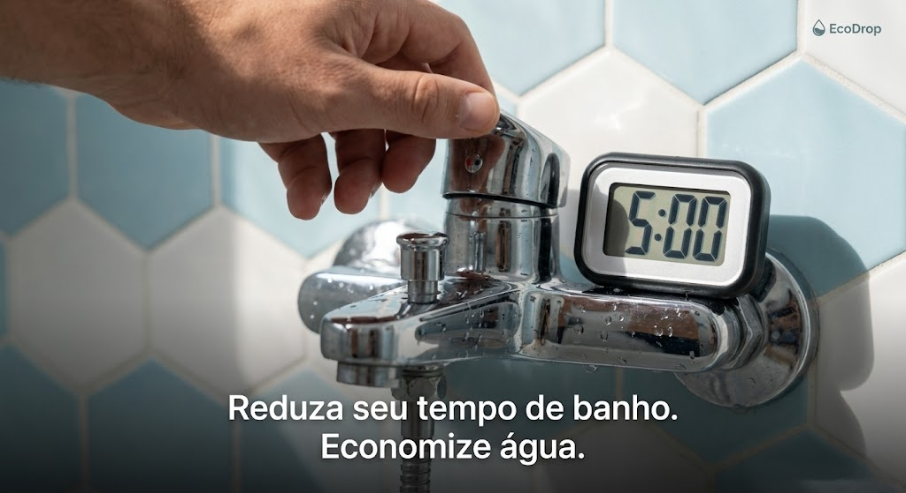
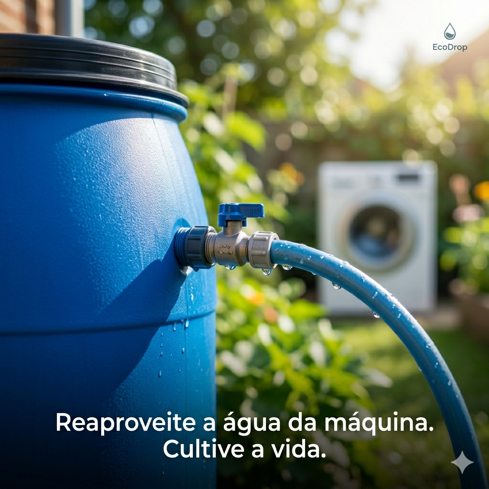
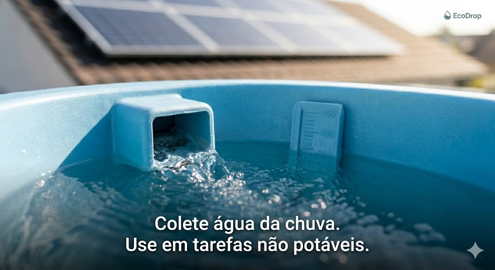
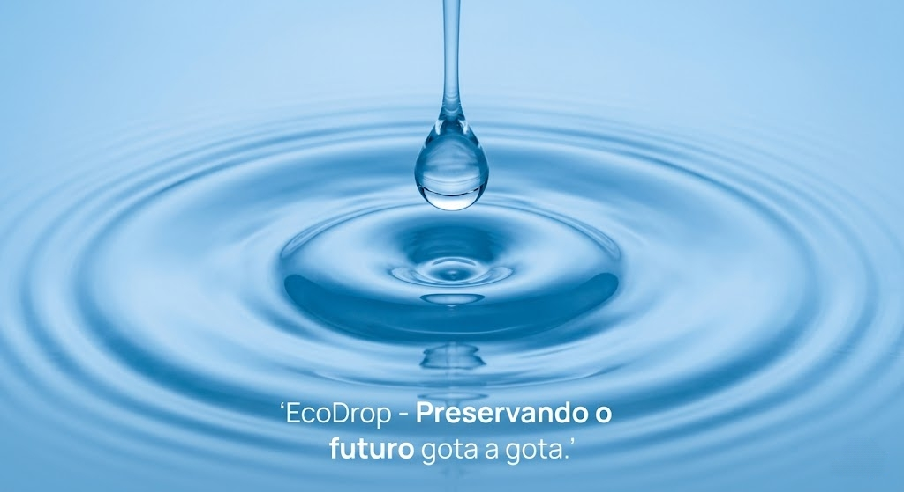
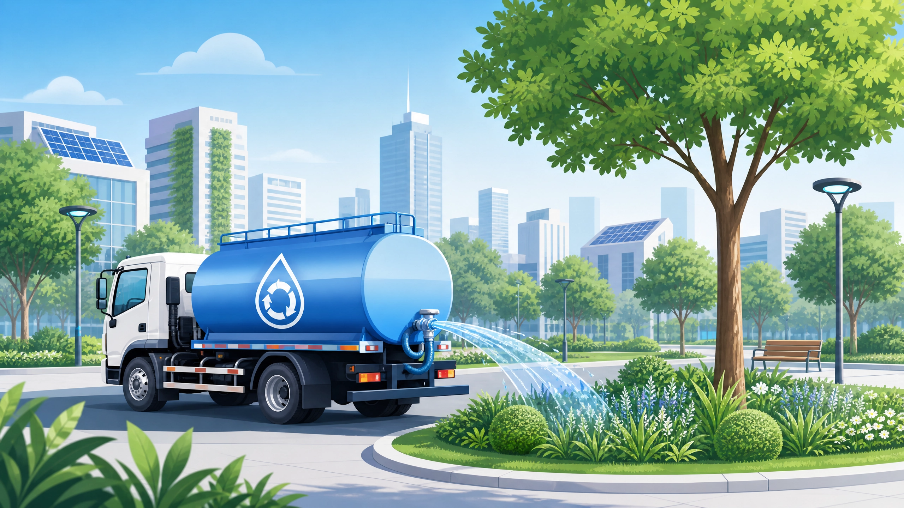
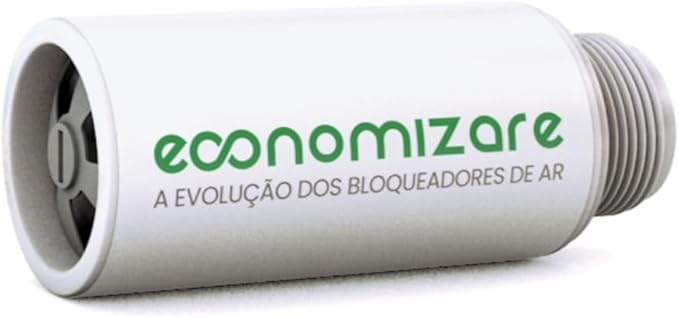

A máquina de lavar roupas é um dos equipamentos que mais consome água. Reutilize o descarte para fins não potáveis.

A lavagem mecanizada pode ser mais econômica que a manual se utilizada corretamente.
O banho é um dos maiores responsáveis pelo consumo residencial. Reduzir o tempo de uso gera economia imediata de água e energia.
Os eliminadores ou bloqueadores de ar são dispositivos vendidos com a promessa de reter o ar da tubulação antes que ele passe pelo relógio, reduzindo o valor cobrado na conta de água.

A captação pluvial reduz a demanda sobre as redes de tratamento público utilizando recursos naturais gratuitos.

Uma torneira aberta despeja muitos litros por minuto sem necessidade, principalmente ao escovar dentes ou lavar louças.

Modelos antigos de descarga gastam volumes desproporcionais de água tratada a cada acionamento.
A irrigação inadequada faz com que grande parte da água evapore antes mesmo de atingir as raízes da vegetação.

Usar a força da água da mangueira para varrer folhas e poeira do chão é um hábito de alto desperdício.

Manter fluxos contínuos de mangueiras ligados enquanto esfrega veículos consome centenas de litros desnecessariamente.

Pequenos gotejamentos persistentes parecem inofensivos, mas acumulam desperdícios gigantescos ao longo dos meses.
A exposição direta ao sol e ao vento causa altas taxas de perda do volume de água por evaporação natural.